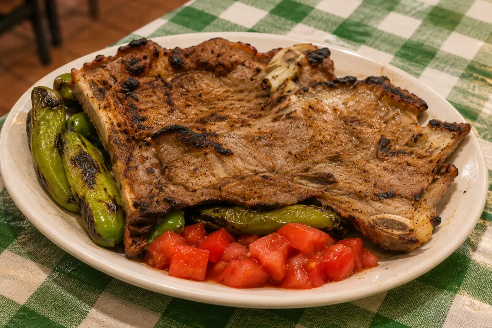

¡Para
un buenSABOR
un buenSABOR
Tacos y antojitos
Kilo
También puedes pedir ½ kilo.
Quesos fundidos
Caldo de camarón
 Imagen ilustrativa
Imagen ilustrativaLos tradicionales de antojo

EL BUEN SABOR SE COMPARTE ✳ LOS COMPAITOS
El menú de siempre, ahora en tu pantalla.
Ver PDF original ↗También puedes pedir ½ kilo.
Imagen ilustrativa
ACEPTAMOS TARJETAS DE CRÉDITO O DÉBITO
Precios en pesos mexicanos, tomados del menú proporcionado. Consulta disponibilidad con la taquería.